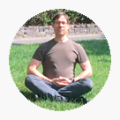
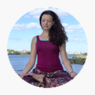

Programs
Arrow Institute of Meditation offers a variety of programs designed to bring meditation to you.
All classes run about 1 hour in length. Shorter or longer sessions are available to create the best fit for your
needs. We offer programs as single-sessions, or as courses over multiple weeks, which allow you to explore
more techniques and build upon, or go deeper into, the power of the techniques already learned.
The only prerequisite is an interest in meditation.

Introduction to Meditation
Learn about a variety of meditation techniques and discover which work best for you. This multi-week course covers posture, breathing, mindset, mantras, visualization, movement, and more.
Relax & Renew
In this guided meditation, you will engage in progressive relaxation techniques to relieve tension in the body and help reduce anxiety and stress. You will access a deep state of relaxation as a guided visualization unfolds, leaving you feeling more refreshed than a 3 hour nap.

Meditation & Poetry
In this guided meditation session, we combine a deep breathing seated meditation practice with reflection on poetry. There will be 3 poems offered for inspiration, contemplation, and appreciation. Participants will also be encouraged to pursue their own writing through journaling and/or their own poetic creation!

Taoist Dissolving Meditation
Thousands of years old, the Taoist meditation practices offered will help you to be more present in your body and in the moment. Dissolve away the effects of old stresses and create a pathway to release new stresses and prevent stress from accumulating in your body and mind.

Nature Reflection
Enjoy the beauty of Nature in this guided meditation that will bring attention to the vibrancy of nature. This part seated, part walking meditation will lead participants on a sensory journey connecting with the outdoor environment and reflecting on the ever-changing nature of all life.

Taoist Moving Meditation
Soothing seated movements are extremely effective at calming the monkey mind we all possess. Standing movements gently increase your energy levels while allowing you to relax. Or learn the Baguazhang Energy Gathering Circle Walk to really boost your energy levels, clear your mind and open your awareness.